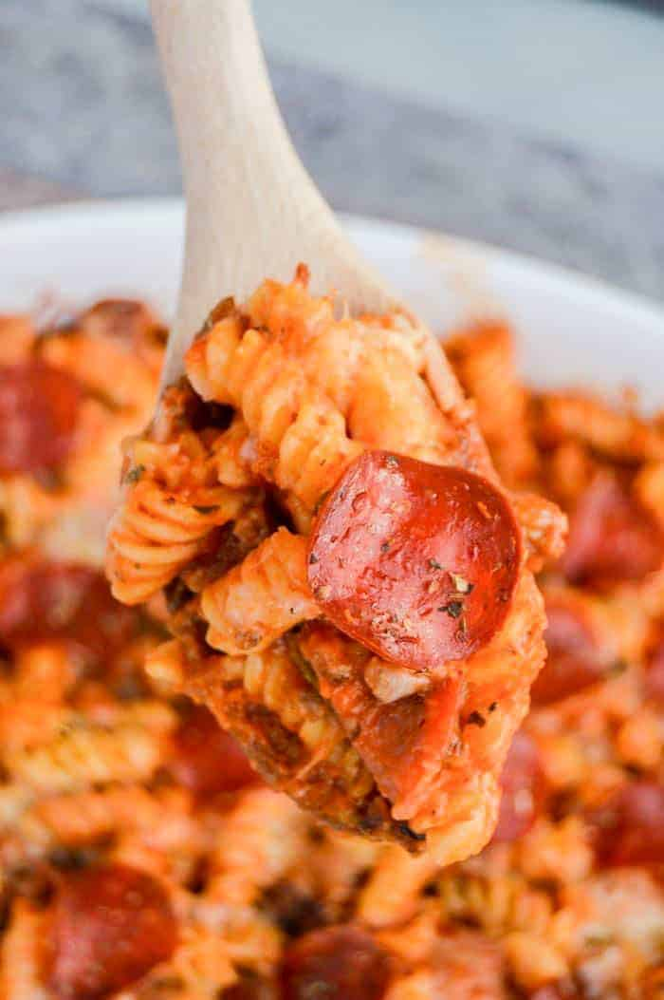

Pizza Casserole

Description
A comforting twist on the classic pizza, with layers of pasta, savory sauce, gooey cheese, and all your favorite toppings baked to perfection in one delicious dish. It's a crowd-pleasing comfort food that's easy to make and even easier to love.
Ingredients
Serves 8 servings.
- 1 cup diced green peppers
- 1/2 cup diced onions
- 1 tbsp. minced garlic
- 1 lb. ground sausage
- 16 oz. penne pasta
- 7 oz. pepperoni
- 24 oz. pizza sauce
- 2 cup shredded mozzarella cheese
- 1 tbsp. Italian seasoning
Instructions
- Add green peppers and onions to a warm skillet and cook until tender. Add garlic and sausage and cook until sausage is fully cooked.
- Cook penne pasta and drain.
- Add cooked sausage and vegetables to your cooked pasta. Add pepperoni and pizza sauce and mix well.
- Add your casserole into a large casserole dish, then top with shredded cheese and sprinkle on Italian seasoning.
- Bake at 350 degrees F for 8-10 minutes or until cheese is melted.
- Enjoy!